무선설비기사 (2020-06-27 기출문제)
1과목: 디지털 전자회로
1. 정류회로에서 부하 양단의 평균 직류전압이 15[V]이고, 맥동률이 2[%]일 때 교류분은 얼마나 포함되어 있는가?
- 0.2[V]
- 2[V]
- 0.3[V]
- 3[V]
(정답률: 72%)

2. 다음 정전압 회로에서 출력전압(Vo)으로 맞는 것은? (단, VZ = Vf이다.)
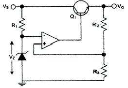
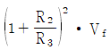
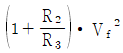
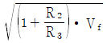
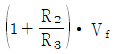
(정답률: 71%)
3. 다음과 같은 회로의 입력에 120[Vrms], 60[Hz] 정현파 신호가 인가 되었을 때. 출력에서 리플전압의 피크-피크값은 약 몇[V]인가? (단, 다이오드에 걸리는 전압강하는 무시한다.)
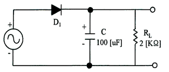
- 11.57[V]
- 12.57[V]
- 13.57[V]
- 14.57[V]
(정답률: 51%)
4. 50[kHz]의 2 decade 높은 주파수는 얼마인가?
- 50[kHz]
- 100[kHz]
- 500[kHz]
- 5[MHz]
(정답률: 71%)
5. 다음 중 증폭기에 대한 설명으로 옳은 것은?
- 입력신호의 에너지를 증가시켜 출력 측에 큰 에너지의 변화로 출력하는 회로이다.
- 출력 내에 포함되어 있는 리플성분을 제거시켜 일정한 크기의 전압을 유지시키는 회로이다.
- 교류전압을 사용하기 적당한 직류전압으로 변환하여 주는 회로이다.
- 출력부하전류 및 온도에 상관없이 일정한 직류 출력전압을 제공하는 회로이다.
(정답률: 83%)
6. 다음과 같은 전력증폭회로에서 대기온도 상승으로 최대 전력소비정격이 절반으로 감소될 경우, 증폭회로의 안정적인 동작을 위한 저항 RC값은 얼마로 변경되야 하는가?
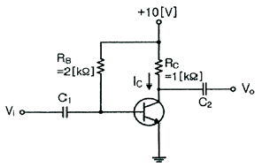
- 2.0[KΩ]
- 0.5[KΩ]
- 1.0[KΩ]
- 4.0[KΩ]
(정답률: 64%)
7. 이미터 접지형 증폭기에서 부하 저항 10[KΩ]이고, hfe=50, hie=2[KΩ], hoe=100[μA/V]일 때 전류 이득의 크기는 얼마인가?
- 10
- 15
- 20
- 25
(정답률: 58%)
8. RC 발진회로에서 RC 시정수를 높게 할 경우 발진주파수는 어떻게 변하는가?
- 발진주파수가 높아진다.
- 발진주파수가 낮아진다.
- 온도의 변화
- 아무런 변화가 없다.
(정답률: 74%)
9. 다음 중 발진회로의 주파수 변동 요인이 아닌 것은?
- 전원 전압의 변동
- 부하의 변도
- 온도의 변화
- Q값 변화
(정답률: 65%)
10. 수정발진기는 임피던스가 어떤 조건일 때 가장 안정된 발진을 하는가?
- 저항성
- 용량성
- 유도성
- 유도성과 용량성 결합
(정답률: 66%)
11. 다음 중 그림과 같은 변조파형을 얻을 수 있는 변조방식에 대한 설명으로 옳은 것은?
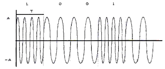
- 정현파의 주파수에 정보를 싣는 FSK 방식으로 2가지 주파수를 이용한다.
- 정현파의 진폭에 정보를 싣는 ASK 방식으로 2가지의 진폭을 이용한다.
- 정현파의 진폭에 정보를 싣는 QAM 방식으로 2가지의 진폭을 이용한다.
- 정현파의 위상에 정보를 싣는 2위상 편이변조방식이다.
(정답률: 78%)
12. FM 검파 방식 중 주파수 변화에 의한 전압 제어 발진기의 제어 신호를 이용하여 복조하는 방식은?
- 계수형 검파기
- PLL형 검파기
- 포스터-실리 검파기
- 비 검파기
(정답률: 80%)
13. 다음의 FM 변조지수 중 대역폭이 가장 넓은 것은?
- 1
- 2
- 3
- 4
(정답률: 83%)
14. 다음 중 주파수변조를 진폭변조와 비교한 설명으로 틀린 것은?
- 점유주파수대폭이 넓다.
- 초단파대의 통신에 적합하다.
- S/N비가 좋아진다.
- Echo의 영향이 많아진다.
(정답률: 79%)
15. 다음 그림과 같은 회로에 대한 설명으로 옳은 것은?
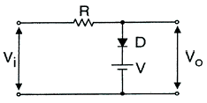
- 입력 파형의 아랫부분을 잘라내는 베이스 클리퍼 회로이다.
- 입력 파형의 윗부분을 잘라내는 피크 클리퍼 회로이다.
- 직렬형 베이스 클리퍼 회로이다.
- 입력파형의 위, 아래 부분을 일정하게 잘라내는 클리퍼 회로이다.
(정답률: 78%)
16. 다음 중 슈미트 트리거(Schmit Trigger)의 응용 분야가 아닌 것은?
- 쌍안정 회로
- 구형파 발생 회로
- 전압 비교 회로
- 정현파 발생 회로
(정답률: 62%)
17. J-K 플립플롭을 사용하여 D형 플립플롭을 만들기 위한 외부 결선 방법으로 맞는 것은?
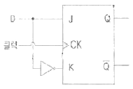
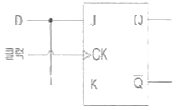
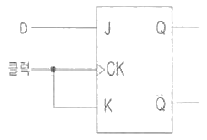
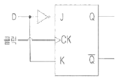
(정답률: 77%)
18. 다음 그림의 논리 회로에 대한 논리식은?
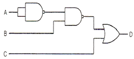
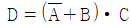
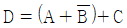
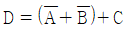
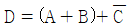
(정답률: 79%)
19. 다음 디코더의 설명 중 옳은 것은?
- 2진수로 표시된 입력 조합에 따라 출력이 하나만 동작하도 록 하는 회로
- 특정한 입력을 몇 개의 코드화된 신호의 조합으로 바꾸는 장치
- 연산회로의 일종으로 보수 합산을 행한다.
- N개의 입력데이터에서 1개의 입력씩만 선택하여 송신하는 회로
(정답률: 59%)
20. 다음 그림과 같이 2n개(0~7)의 입력을 넣었을 때 출력이 2진수(000~111)로 나오는 회로의 명칭은?
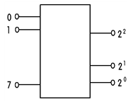
- 디코더(Decoder)회로
- A-D 변환회로
- D-A 변환회로
- 인코더(Encoder) 회로
(정답률: 77%)
2과목: 무선통신 기기
21. 다음 중 PM(Phase Modulation) 신호의 복조에 대한 설명으로 틀린 것은?
- FM(Frequency Modulation) 신호와 같이 복조한 후 메시지 신호를 복구하기 위해서 적분기를 통과시킨다.
- PM(Phase Modulation) 신호 최종 출력의 잡음 전력스펙트럼은 주파수에 따라 일정한 값을 가진다.
- PM(Phase Modulation) 신호의 신호대 잡음비는 FM에 비해서 주파수가 높을수록 크다.
- PM(Phase Modulation) 변조기에서 사전강세(Preemhasis)필터, 복조기에 사후복세(Deemphasis) 필터를 설치하여 잡음의 영향을 줄인다.
(정답률: 51%)
22. 다음 중 주파수 효율이 가장 높은 변조방식은 무엇인가?
- BPSK
- OOK
- FSK
- QPSK
(정답률: 68%)
23. 상업용 FM 방송에서는 기저대역 신호의 대역을 15[kHz]~30[kHz]로 하고, 최대 주파수 편이를 Δf=75[kHz]로 제한하고 있다. 전송대역폭을 각 채널당 200[kHz]로 할당하는 경우 FM 방송에서의 신호 대역폭은 얼마인가?
- 150[kHz]
- 160[kHz]
- 180[kHz]
- 200[kHz]
(정답률: 78%)
24. 다음 중 고조파의 방지 대책이 아닌 것은?
- 출력 증폭기로 Push-Pull 증폭기를 사용한다.
- 양극 동조 회로의 실효 Q를 높게한다.
- 여진(Bias) 전압을 깊게 걸지않는다.
- 고조파에 대해 밀결합한다.
(정답률: 81%)
25. 다음 중 GPS에 대한 설명으로 틀린 것은?(오류 신고가 접수된 문제입니다. 반드시 정답과 해설을 확인하시기 바랍니다.)
- 반송파는 1575.72[MHz]를 사용한다.
- 지구 궤도면에 있는 24개 이상의 위성을 이용한다.
- WGS-84 좌표계를 사용한다.
- 지상제어국이 분산되어 있다.
(정답률: 63%)
26. 다음 중 수신기의 동작상태가 얼마나 안정한가를 나타내는 안정도에 미치는 영향이 아닌 것은?
- 국부발진 주파수의 변동
- 증폭도의 변동
- 부품의 경년변화에 의한 성능열화
- 변조도의 변동
(정답률: 54%)
27. 다음 중 DSB(Double Side Band) 방식에 비하여 SSB(Single Side Band) 방식의 장점으로 틀린 것은?
- 송신기의 소비전력이 약 30[%] 정도 줄어든다.
- 선택성 페이딩의 영향이 약 6[dB] 정도 개선된다.
- SNR 개선이 첨두 전력이 같을 때 약 12[dB] 정도 개선된다.
- 대역폭이 축소되어 주파수 이용률이 개선된다.
(정답률: 71%)
28. 다음 중 수신기에서 고주파 증폭회로의 역할로 적합하지 않은 것은?
- 수신기의 감도 개선
- 불필요한 전파발사 억제
- 근접주파수 선택도 개선
- 안테나와의 정합 용이
(정답률: 65%)
29. 무선 항행 보안 장비인 선박 장거리 식별 추적 장치(LRIT) 정보에 적합하지 않은 것은?
- 선박 식별부호
- 선박안전 경보부호
- 방송일시(날짜와 시간)
- 선박의 위치(위도/경도)
(정답률: 68%)
30. 진폭 12[V], 주파수 10[MHz]의 반송파를 진폭 6[V], 1[kHz]의 변조파 신호로 진폭 변조할 때 변조율은?
- 25[%]
- 50[%]
- 75[%]
- 100[%]
(정답률: 80%)
31. 다음 중 BPSK(Binary Phase Shift Keying) 변조방식에 대한 설명으로 틀린 것은?
- 정보 데이터의 심볼값에 따라 반송파의 위상이 변경되는 변조방법이다.
- 동기검파 방식만 사용이 가능해 구성이 비교적 복잡하다.
- 점유대역폭은 ASK(Amplitude Shift Keying)와 같으나 심볼 오류 확률은 낮다.
- M진 PSK 방식의 대역폭 효율은 변조방식의 영향을 받는다.
(정답률: 60%)
32. FSK 신호의 전송속도가 1,200[bps]이면 보(baud)속도는 얼마인가?
- 300[baud]
- 400[baud]
- 600[baud]
- 1,200[baud]
(정답률: 77%)
33. PM변조에서 주파수 편이(Kp)의 값이 매우 작다면 협대역 PM 변조라 한다. 정보신호의 대역폭을 B라 할 때, PM 변조한 신호의 대역폭을 근사화한 값은 얼마인가?
- B
- 2B
- 3B
- 4B
(정답률: 81%)
34. 다음 중 충전의 종류가 아닌 것은?
- 중충전
- 초충전
- 평상충전
- 과충전
(정답률: 76%)
35. 다음 중 무정전 전원공급장치(UPS)의 On-Line 방식에 대한 설명으로 틀린 것은?
- 사용전원을 그대로 출력으로 내보내며 축전지는 충전회로를 통해 충전한다.
- 상시 인버터 방식이라고도 한다.
- 항상 인버터 회로를 경유하여 출력으로 내보낸다.
- 출력이 안정되며 높은 정밀도를 가진다.
(정답률: 63%)
36. 다음 중 전력변환장치가 아닌 것은?
- 인버터(Inverter)
- 컨버터(Converter)
- 정류기(Rectifer)
- 어레스터(Arrester)
(정답률: 76%)
37. 다음 중 접지저항에 대한 설명으로 틀린 것은?
- 안테나를 대지에 접지시킬 때 안테나와 대지 사이에 존재하게 되는 접촉저항이다.
- 접지저항을 크게 하기 위해 다점접지를 사용한다.
- 접지 안테나의 효율을 결정하는 중요한 요소이다.
- 코올라우시 브리지를 이용하여 측정할 수 있다.
(정답률: 78%)
38. 기본파 전압이 10[V], 제 2고조파 전압이 4[V], 제3고조파 전압이 3[V]일 때 전압 왜율은 몇 [%]인가?
- 10[%]
- 25[%]
- 50[%]
- 80[%]
(정답률: 75%)
39. 무선통신망의 측정 단위로 등방성 안테나(전 방향에 균등한 전파를 방사하는 기상의 안테나)를 기준으로 한 안테나의 상대적 이득 특성단위를 표시한 것은?
- dBm
- dBi
- dBd
- dBc
(정답률: 79%)
40. 인버터의 스위칭 주파수가 2[kHz]가 되려면 주기는 몇 [ms]로 해야 하는가?
- 0.1[ms]
- 0.5[ms]
- 1[ms]
- 10[ms]
(정답률: 81%)
3과목: 안테나 공학
41. 다음 중 전자계 현상에 대한 설명으로 틀린 것은?
- 유전율이 커지면 파장은 길어진다.
- 전계 벡터가 X툭과 Y축 방향으로 구성되어 그 크기가 같은 경우를 원형 편파라고 한다.
- 복사 전계의 크기는 거리에 반비례한다.
- 전파의 주파수가 높을수록 직진성이 강하다.
(정답률: 62%)
42. 비유전율 50, 비투자율 1이며 도전율 20[mho/m]인 증류수에 15.9[GHz]의 파가 진행할 때 고유 임피던스가 44.27 + j9.96[Ω]이었다. 이 때 전계와 자계의 위상차는?
- 전계가 자계보다 12.6[°] 앞선다.
- 전계가 자계보다 22.5[°] 앞선다.
- 자계가 전계보다 12.6[°] 앞선다.
- 자계가 전계보다 22.5[°] 앞선다.
(정답률: 59%)
43. 다음 중 파장이 가장 짧은 주파수대는 어느 것인가?
- UHF
- VHF
- SHF
- EHF
(정답률: 75%)
44. 다음 중 동축케이블 급전선에 관한 설명으로 옳은 것은?
- 유전체 손실을 무시하면 감쇠정수는
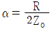
이다.(단, R은 도선의 저항, Z0는 특성임피던스) - 감쇠정수는 주파수와 무관하므로 SHF대에서 유전체 손실이 감소한다.
- 외부도체는 접지하지 않고 사용하므로 외부로부터 유도방해를 많이 받는다.
- 특성임피던스는 평행 2선식보다 높다.
(정답률: 66%)
45. 다음 중 도파관창의 기능으로 올바른 것은?
- 도파관의 임피던스를 정합시킨다.
- 도파관내의 반사파를 감쇠시킨다.
- 도파관의 비틀림을 용이하게 한다.
- 도파관에 이물질이 들어가지 않도록 한다.
(정답률: 78%)
46. 그림과 같이 도선의 길이가 λ/4인 선단을 단락할 경우 ab점 에서 본 임피던스는?
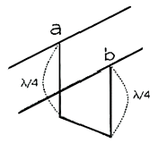
- 0
- 유도성
- 용량성
- ∞
(정답률: 79%)
47. 다음 중 동조 급전선과 비동조 급전선에 대한 설명으로 틀린 것은?
- 정재파가 분포되어 있는 급전선을 동조 급전선이라 한다.
- 비동조 급전선은 동조 급전선보다 전력의 손실이 적다.
- 동조 급전선은 거리가 짧을 때, 비동조 급전선은 길 때 주로 사용한다.
- 비동조 급전선은 정합장치가 불필요하다.
(정답률: 75%)
48. 특성 임피던스 Zn=50[W]인 무한장 선로에 부하 ZL = 40 + j80[W]을 접속하였을 때 부하의 정규화 임피던스는 얼마인가?
- 0.4 + j0.8[W]
- 0.8 + j1.2[W]
- 0.8 + j1.6[W]
- 0.2 + j0.4[W]
(정답률: 76%)
49. 안테나 전류를 지선망의 각 분구에 똑같게 흘려서 안테나 전류가 기저부 근처에 밀집하는 것을 피하여 접지저항의 감소를 도모하는 접지방식은?
- 방사상 접지
- 심굴 접지
- 다중 접지
- 가상 접지
(정답률: 71%)
50. 길이가 0.4[m]이고, 사용주파수가 50[MHz]인 미소다이폴 안테나에 전류 9[A]가 흘렀을 때 복사전력은 약 얼마인가?
- 855
- 255
- 455
- 555
(정답률: 60%)
51. 다음 중 진행파형 안테나로서 예리한 지향특성을 가지며 주로 단파고정국 또는 해안국의 송·수신용으로 사용되는 안테나는?
- 루프(Loop) 안테나
- 더블렛(Doublet) 안테나
- 디스콘(Discone) 안테나
- 롬빅(Rhombic) 안테나
(정답률: 80%)
52. 주파수가 1[MHz]인 λ/4 수직접지 안테나의 실효길이는 약 얼마인가?
- 38[m]
- 48[m]
- 58[m]
- 68[m]
(정답률: 58%)
53. 다음 중 소형·경량으로 부엽이 적고 이득이 높아 선박용 레이다 안테나로 가장 적합한 것은?
- 헤리컬 안테나
- 슬롯 어레이 안테나
- 혼 리플렉터 안테나
- 전자나팔 안테나
(정답률: 79%)
54. 수평 반파장 다이폴 안테나를 만들어 20[MHz]인 전파를 발사하고자 할 때 안테나의 한쪽(급전점을 중심으로 좌측 또는 우측) 길이는 약 몇 [m]로 하면 좋겠는가? (단, 단축률은 5[%]로 한다.)
- 3.6[m]
- 3.8[m]
- 7.1[m]
- 7.5[m]
(정답률: 49%)
55. 대류권파의 페이딩 생성원인에 의한 분류에 속하는 것으로 옳은 것은?
- 신틸레이션 페이딩
- 동기성 페이딩
- 선택성 페이딩
- 근거리 페이딩
(정답률: 77%)
56. 다음 중 안테나의 Top Loading 효과에 대한 설명으로 틀린 것은?
- Top Loading을 설치하면, 수평이득이 커진다.
- Top Loading을 설치하면, 복사저항이 감소한다.
- Top Loading을 설치하면, 낮은 안테나로 고각도 복사가 적다.
- Top Loading을 설치하면, 안테나 높이는 등가적으로 높게 된다.
(정답률: 53%)
57. 전리층의 높이가 지상 약 100[Km] 정도이며, 발생지역과 장소가 불규칙한 전리층은?
- D층
- Es층
- F1층
- F2층
(정답률: 79%)
58. 다음 중 임계 주파수에 대한 설명으로 틀린 것은?
- MUF는 임계 주파수보다 낮다.
- 전리층의 전자밀도에 따라 달라진다.
- D층의 임계 주파수가 F층의 임계 주파수가 낮다.
- 전리층을 통과하는 주파수 중 가장 낮은 주파수이다.
(정답률: 58%)
59. 다음 중 자기람 현상에 대한 설명으로 틀린 것은?
- 고위도 지방이 심하게 나타난다.
- 야간보다 주간에 많이 나타난다.
- 지자계의 급격한 변동을 발생시킨다.
- 태양 표면의 폭발에 의해 방출된 다량의 대전입자가 지구에 도달하기 때문에 야기된다.
(정답률: 71%)
60. 다음 중 브루스터각(Brewster Angle)에 대한 설명으로 틀린 것은?
- 반사가 일어나지 않는 각이다.
- 수직편파인 경우에만 존재한다.
- 공기에 대한 굴절률을 n이라 할 때 브루스터각은 θ=tan-1n 이다.
- 브루스터각 보다 큰 각으로 입사하는 전파는 전(Total)투과가 일어난다.
(정답률: 63%)
4과목: 무선통신 시스템
61. 다음의 변조방식 중 디지털 변조 방식이 아닌 것은?
- FSK
- PSK
- AM/FM
- DPSK
(정답률: 84%)
62. 다음 중 PCM(Pulse Code Modulation) 다중통신의 특징이 아닌 것은?
- 전송로의 잡음이나 누화 등의 방해에 강하다.
- 중계시마다 잡음이 누적되지 않는다.
- 경로(Route) 변경이나 회선 변환이 쉽다.
- 협대역 전송로가 필요하다.
(정답률: 77%)
63. 다음 중 FSk의 동기 검파기로 사용되지 않는 것은?
- 정합필터
- 상관기
- PLL
- 포락선 검파기
(정답률: 52%)
64. FM 통신방식이 AM방식에 비해 S/N비가 좋은 이유는?
- 리미터(Limiter)를 사용한다.
- 점유주파수대폭이 좁다.
- 깊은 변조를 할 수 있다.
- 클래리파이어(Clarifier)를 사용한다.
(정답률: 72%)
65. 다음은 위성 위치 정보 시스템의 특징이 아닌 것은?
- 각종 이동체에 탑재가 가능하며, 3차원의 위치 및 고도 등을 정확히 알 수 있다.
- 측정된 자료는 온라인 처리가 가능하다.
- 각 나라마다 각각의 규격을 갖는 좌표계를 사용한다.
- 두 지점간의 거리 측정 및 신속한 측량이 가능하다.
(정답률: 77%)
66. IS-95 CDMA 시스템에서 하향(순방향)링크 채널의 종류가 아닌 것은?
- 파일럿 채널
- 엑세스 채널
- 페이징 채널
- 동기 채널
(정답률: 61%)
67. 다음 중 이동통신 기지국 설비 운용 시 주요 점검사항으로 적합하지 않은 것은?
- 안테나의 지향성 확인
- 전송선로(급전부) 확인
- 주변 전파환경 변동 확인
- 흠 위치등록장치(HLR)의 운용상태
(정답률: 77%)
68. 다음 중 ASTC 3.0과 DVB-T2에 대한 비교 중 연결이 잘못된 것은?
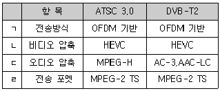
- ㄱ
- ㄴ
- ㄷ
- ㄹ
(정답률: 68%)
69. 다음 중 CDMA 시스템의 용량을 결정하는 주요 파라미터가 아닌 것은?
- 채널간 간섭
- 음성 활성화율
- 주파수 재사용 효율
- 낮은 호 손실률
(정답률: 62%)
70. 인공위성 통신망을 이용하여 가장 넓은 지역을 커버하는 광대역 서비스는?
- Mega cell
- Macro Cell
- Micro Cell
- Pico cell
(정답률: 80%)
71. 다음 중 위성통신에서 사용하는 CDMA 다원접속 방식의 특징이 아닌 것은?
- 협대역 잡음 신호에 강하다.
- TDMA방식에 비해 가입자 수용 용량이 적다.
- 사용자 신호에 대한 비밀이 보장된다.
- 강력한 에러 정정으로 링크 품질이 좋다.
(정답률: 68%)
72. 다음 Mobile WiMAX 시스템 표준 중 채널대역폭의 10[MHz]와 8.75[MHz] 요구 기준이 같은 것은?
- TTG(Transmit Transition Gap) + RTG(Receive Transition Gap)시간
- OFDMA Symbol Duration 시간
- Tone Spacing
- 프레임당 OFDMA Symbol 개수
(정답률: 67%)
73. 기지국 장치로부터의 RF신호 입력을 Slave장치로 공급하기 위해 RF신호를 분기하는 유니트는 어느 것인가?
- COME(Combiner : 결합기)
- SPLT(Splitter : 분배기)
- NMS(Network Management System : 망 관리 시스템)
- Directional Coupler(방향성 결함기)
(정답률: 76%)
74. OSI 7계층 중 하나인 데이터링크계층에서 사용되는 데이터 전송단위는?
- Bit
- Frame
- Packet
- Message
(정답률: 71%)
75. 다음 중 OSI 참조모델에서 컴퓨터 네트워크의 요소가 아닌 것은?
- 개방형 시스템
- 물리매체
- 응용프로세스
- 접속매체
(정답률: 57%)
76. 다음의 문제가 발생하는 것을 막아주는 프로토콜 기능은 어느 것인가?
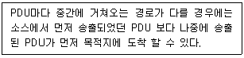
- 동기화
- 순서결정
- 주소기능
- 다중화
(정답률: 84%)
77. 무선국 허가증에 등가등방복사전력(EIRP)이 3.28[dB]로 기재되어 있을 때 실효복사전력(ERP)은 몇 [dB]인가? (단, 반파장 다이폴안테나를 기준으로 한다.)
- 2.0[dB]
- 3.28[dB]
- 5.43[dB]
- 6.56[dB]
(정답률: 73%)
78. FM 수신기에서 반송파가 없으면 잡음이 증가하는데, 이때 잡음 전압을 이용하여 저주파 증폭기의 동작을 정지시켜 출력을 차단하는 회로를 무엇이라 하는가?
- 스켈치 회로
- 프리 엠퍼시스 회로
- 디 엠퍼시스 회로
- 주파수 변별기
(정답률: 73%)
79. 위성통신시스템을 설계하는데 고려하여야 할 사항이 아닌 것은?
- 위성월식 상황을 고려하여야 한다.
- 먼 거리이므로 전송지연을 고려하여야 한다.
- 잡음 및 간섭상태를 고려하여야 한다.
- 전과의 손실상태를 고려하여야 한다.
(정답률: 74%)
80. 다음 중 무선통신 시스템의 로그 데이터 분석을 통해 얻은 정보의 활용 방안으로 적합하지 않은 것은?
- 시스템 취약점 분석
- 시스템의 장애 원인 분석
- 사용자의 서비스 사용 형태 분석
- 외부로부터의 침입감지 및 추적
(정답률: 75%)
5과목: 전자계산기 일반 및 무선설비기준
81. 다음 중 중앙처리장치(CPU)의 스케줄링 기법을 비교하는 성능 기준으로 옳지 않은 것은?
- CPU 활용률 : CPU가 작동한 총시간 대비 프로세스들이 실제 사용시간
- 처리율(Throughput) : 단위 시간당 처리 중인 프로세스의 수
- 대기시간(Waiting Time) : 프로세스가 준비 큐(Ready Queue)에서 스케줄링 될 때까지 기다리는 시간
- 응답시간: 대화형 시스템에서 입력한 명령의 처리결과가 나올 때까지 소요되는 시간
(정답률: 62%)
82. 다음의 소프트웨어에 대한 설명으로 틀린 것은?
- 명령어의 집합을 의미한다.
- 소프트웨어는 크게 시스템소프트웨어와 응용소프트웨어로 나뉜다.
- 응용소프트웨어에는 백신, 워드프로세서 등의 응용프로그램이 있다.
- 시스템소프트웨어에는 운영체제가 있다.
(정답률: 68%)
83. 특정한 짧은 시간 내에 이벤트나 데이터의 처리를 보증하고, 정해진 기간 안에 수행이 끝나야 하는 응용 프로그램을 위하여 만들어진 운영체제는?
- 임베디드 운영 체제
- 분산 운영 체제
- 실시간 운영 체제
- 라이브러리 운영 체제
(정답률: 71%)
84. 바이트(8bit) 단위로 주소지정을 하는 컴퓨터에서 MAR(Memory Address Register)과 MDR(Memory Data Register)의 크기가 각각 32비트이다. 512Mb(Megabit) 용량의 반도체 메모리 칩으로 이 컴퓨터의 최대 용량으로 주기억장치의 메모리 배열을 구성하고자 한다. 필요한 칩의 개수는?
- 8개
- 16개
- 32개
- 64개
(정답률: 52%)
85. 다음 중 2진수 (110010)2를 8진수로 올바르게 변환한 것은?
- (60)8
- (61)8
- (62)8
- (63)8
(정답률: 79%)
86. 다음 중 인터럽트에 대한 설명으로 틀린 것은?
- 인터럽트 수행 중에는 다른 인터럽트가 발생하지 못한다.
- 인터럽트 발생 후에 복귀하기 위해서는 스택(Stack)이 필요하다.
- 인터럽트 발생은 인터럽트 플래그에 의해 결정된다.
- 인터럽트 발생하면 주프로그램은 중단이 되고 인터럽트 서비스 루틴으로 이동한다.
(정답률: 69%)
87. 다음 중 자료가 발생할 때 마다 즉시 처리하여 응답하는 방식은?
- 일괄처리 시스템
- 실시간-처리 시스템
- 시분할 시스템
- 병렬 처리 시스템
(정답률: 80%)
88. 프로세서, 주기억장치, I/O(Isolated I/O) 방식에 관한 사항은 어느 것인가?
- 많은 종류의 I/O 명령어들을 사용할 수 있다.
- 귀중한 주기억장치 주소영역이 I/O 장치들을 위하여 사용된다.
- 프로그래밍을 더 효율적으로 할 수 있다.
- 특정 I/O 명령들에 의해서만 I/O 포트들을 엑세스 할 수있다.
(정답률: 66%)
89. 주소영역(Address Space)이 1[GB]인 컴퓨터가 있다. 이 컴퓨터의 MAR(Memory Address Register)의 크기는 얼마인가?
- 30[bit]
- 30[Byte]
- 32[bit]
- 32[Byte]
(정답률: 61%)
90. 다음 중 컴퓨터의 운영체제에서 로더(Louder) 주요 기능이 아닌 것은?
- 프로그램과 프로그램 간의 연결(Linking)을 수행한다.
- 출력 데이터에 대해 일시 저장(Spooling) 기능을 수행한다.
- 프로그램이 실행될 수 있도록 번지수를 재배치(Relocation)한다.
- 프로그램 또는 데이터가 저장될 번지수를 계산하고 할당(Allocation)한다.
(정답률: 76%)
91. 다음 중 무선국의 개설허가 시 심사하는 사항이 아닌 것은?
- 주파수지정이 가능한지 여부
- 무선설비가 기술기준에 적합한지 여부
- 재허가가 가능한지 여부
- 무선종사자의 배치계획이 자격·정원배치기준에 적합한지 여부
(정답률: 74%)
92. “거짓이나 그 밖의 부정한 방법으로 적합성평가를 받은 경우”에 해당되는 법령 처분기준은?
- 적합성 평가 취소
- 업무중지 6개월
- 생산중지
- 수업중지
(정답률: 81%)
93. 초단파방송을 하는 공동체 라디오사업자가 개설하는 방송국의 개설허가의 유효기간은?
- 1년
- 2년
- 3년
- 5년
(정답률: 50%)
94. 자연환경 보호 등을 위하여 시설자에게 무선국의 무선설비 중 공동으로 사용하게 할 수 있는 대상설비가 아닌 것은?
- 무선국의 안테나 설치대
- 송신설비
- 수신설비
- 전원설비
(정답률: 69%)
95. 다음 중 과학기술정보통신부장관이 전파감시 업무를 수행하는 이유로 타당하지 않은 것은?
- 전파의 효율적 이용촉진
- 혼선의 신속한 제거
- 무선국의 원활한 검사
- 전파이용질서의 유지 및 보호
(정답률: 64%)
96. 점유주파수대역폭의 허용치에 있어서 무선설비규칙에 규정되어 있지 않은 사항에 대하여는 어떠한 것을 적용하는가?
- 방송통신위원회 별도 지침에 따른다.
- 국제전기통신연합(ITU)에서 정하는 바에 따른다.
- 실제 측정하여 자체 공시 후 적용한다.
- 전파지정기준에 따른다.
(정답률: 70%)
97. 정부가 주파수 회수 또는 재배치를 함으로 인하여 발생하는 손실을 보상하여야 할 경우는 어느 것인가?
- 시설자의 요청이 있는 경우
- 이용실적이 저조한 주파수를 회수 또는 재배치하는 경우
- ITU에 의하여 주파수 국제분배가 변경된 경우
- 주파수의 용도가 제2순위 임무인 주파수를 사용하는 경우
(정답률: 62%)
98. 무선국 분류 중 육상의 일정한 고정지점에 개설하여 항공위성업무를 행하는 지구국은?
- 항공국
- 항공기국
- 항공지구국
- 항공기지구국
(정답률: 74%)
99. 다음 중 준공검사를 받지 아니하고 운용할 수 있는 무선국에 속하지 않는 것은?
- 적도 지역에 개설한 무선국
- 대통령 경호를 위하여 개설하는 무선국
- 30와트 미만의 무선설비를 시설하는 어선의 선박국
- 외국에서 운용할 목적으로 개설한 육상이동지구국
(정답률: 57%)
100. “주어진 방향의 동일한 거리에서 동일한 전계 또는 전력밀도를 발생시키기 위하여 주어진 안테나와 손실이 없는 기준안테나의 입력단에서 각각 필요로 하는 전력의 비”를 무엇이라고 하는가?
- 규격전력
- 안테나이득
- 안테나공급전력
- 등가등방복사전력비
(정답률: 51%)